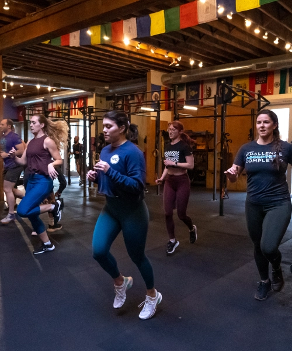

A Portland CrossFitter's Fight Against 'Normal Weight Obesity' She spent maybe $200 on the whole setup.
14 A Portland CrossFitter's Fight Against 'Normal Weight Obesity'
The rain was coming down sideways. That’s Portland in February. Maya pulled her hood tighter and walked into the CrossFit box for her 6 AM class. She was 5 foot 7, 145 pounds. Her BMI was 22.7 – well within normal. She could deadlift 275 pounds. She could do pull‑ups. She looked fit. But she felt tired all the time. Her doctor had run bloodwork. Everything came back normal. “You’re fine,” the doctor said. “Maybe you’re just stressed.” Just saying.
Maya wasn’t Her shoulders sagged. She leaned against the wall longer than she needed to. She was irritable. Her recovery from workouts was slow. She asked me to do a body composition assessment. I ran a 7‑site skinfold. Chest: 10mm. Midaxillary: 18mm. Suprailiac: 24mm. Abdomen: 26mm. Thigh: 20mm. Triceps: 16mm. Subscapular: 14mm. Total sum: 128mm. That put her at 29.7% body fat – borderline obese by ACE standards, certainly above the 18-24% fitness range for women her age. Maya was a textbook case of normal weight obesity. Normal BMI. High body fat. Low muscle mass for her activity level. Elevated visceral fat – her DEXA later showed 1.2 liters, moderate risk. The BMI vs Body Fat Analyzer would have flagged her immediately.
Maya’s problem wasn’t lack of exercise. She was exercising plenty. She did CrossFit four times a week. She ran on weekends. Her problem was diet quality and sleep. She was under‑eating protein, over‑eating processed carbs, and sleeping five hours a night. Her high cortisol from chronic stress and poor sleep kept her body in fat‑storage mode. We changed three things. Protein to 140 grams per day (1.6 grams per kilogram). Sleep to 7 hours minimum. Fiber to 30 grams per day from whole foods. She kept training the same. Three months later, her skinfolds dropped to 112mm total – about 26% body fat. Her visceral fat dropped to 0.9 liters. Her energy came back. She stopped needing an afternoon nap. The Body Fat Percentage Estimator showed her progress.
Maya’s story is common in Portland’s fitness community. People work out hard. They assume that means they’re healthy. But you can’t out‑train a bad diet. You can’t out‑lift poor sleep. Normal weight obesity affects up to 30% of normal‑BMI adults. It’s more common in women, in older adults, and in people who lost weight quickly without resistance training.
Maya was in her thirties, but her low muscle mass and high stress made her a candidate. I asked Maya what she thought was wrong before she got tested. “I thought I was depressed,” she said. “I thought maybe I needed medication. I never literally thought my body fat was high. I weigh 145 pounds. How could I be overfat?”
That’s the insidious part of normal weight obesity. The scale reassures you. Your clothes fit. People tell you you look But inside, your metabolic health is deteriorating. Maya’s DEXA also showed low bone density – a Z‑score of -1.3. She was 34.
None of that mattered after what happened next.
That’s not normal. Her low protein and high cortisol had been leaching calcium from her bones. She started supplementing vitamin D and eating more dairy. Six months later, her Z‑score improved to -0.9. The BMI vs Body Fat Analyzer is not a diagnostic tool. But it’s a screening tool. If your BMI is normal and your body fat is high, you need to take action. Who should get tested for normal weight obesity
Anyone with a family history of metabolic disease (diabetes, heart disease) Women with PCOS or irregular periods People who have lost significant weight without resistance training
Older adults (over 50) – muscle loss accelerates with age
Anyone who is “skinny fat” – looks thin but feels weak
How to fix normal weight obesity Resistance training. Non‑negotiable. Lift weights 2‑3 times per week. Protein at 1.6-2.2 grams per kilogram of body weight. Sleep 7‑9 hours. Reduce stress. High cortisol drives visceral fat storage. Eat fiber‑rich whole foods. Reduce processed carbs and sugar. Limit alcohol. Alcohol is preferentially stored as visceral fat. Maya did all of these. Six months later, her body fat was 23%. Her visceral fat was 0.6 liters. Her bone density was improving. She told me “I feel like a different person. I have energy. I’m not angry all the time.” He laughed, a little too loud. It came out wrong. He stopped.
She still does CrossFit at 6 AM. But now she recovers. She sleeps 7 hours. She eats protein at every meal. She stopped weighing herself. “I used to think the scale was the truth,” she said. “Now I know it’s just a number.” He nodded. He didn't trust his voice.